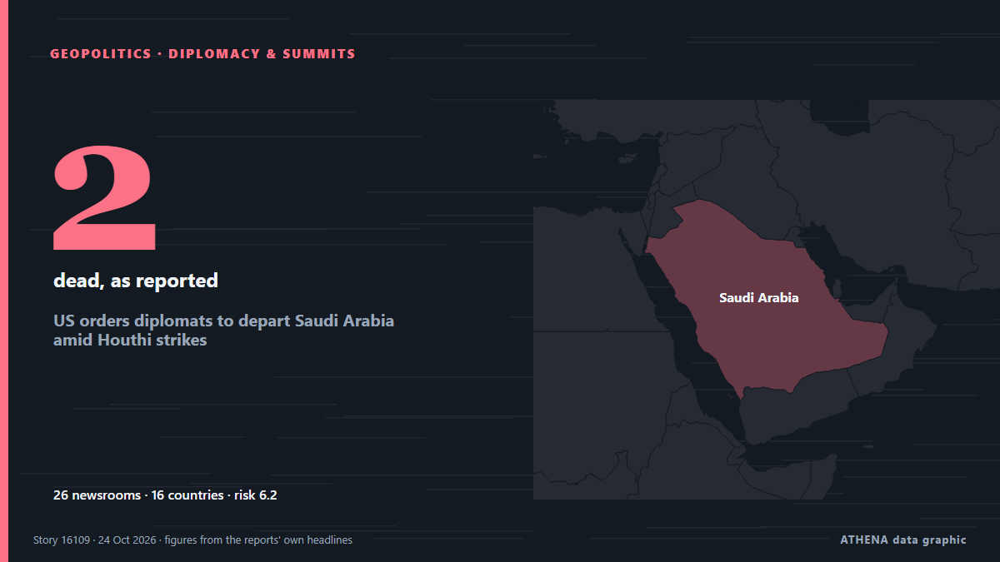

US orders diplomats to depart Saudi Arabia amid Houthi strikes

It comes after an escalation of the fighting in Yemen, opening another front in the Middle East conflict. من The Straits Times
نشرته بشكل مستقل 26 مصدرًا في 16 دولة منذ 20 أكتوبر، وأول من نشره Asharq Al-Awsat (English)؛ والتغطية تتراجع. يقدّر ATHENA الخطر بأنه مرتفع (6.2/10)، ويعود ذلك أساسًا إلى خطورة الضرر الموصوف ونطاقه الجغرافي والقطاعي. الثقة 88٪ (مرتفعة)، وعدد المصادر المستقلة المؤكِّدة: 26، بمتوسط موثوقية للمصادر يبلغ 76٪. وسائل الإعلام حسب البلد: الولايات المتحدة (4), المملكة المتحدة (3), الهند (3). التغطية: من 20 أكتوبر إلى 24 أكتوبر، 100 ساعة.
لماذا يهم: البحر الأحمر ومضيق باب المندب هما أقصر طريق بحري بين آسيا وأوروبا عبر قناة السويس. تدفع الهجمات على السفن التجارية الشركات إلى الالتفاف حول أفريقيا، ما يضيف وقتًا وكلفة على التجارة العالمية.
ما الذي تغيّر: تقرير جديد واحد خلال 24 ساعة حتى 24 أكتوبر.
تُعرض العناوين بالإنجليزية كما نُشرت.
نظرة سريعة
اختير وقُيِّم وكُتب وفق منهجية ATHENA المنشورة. لا يتدخل أي محرر في الأحداث بعينها. كيف يُنتَج ›
| 20 Oct 04:37 UTC | 1 |
|---|---|
| 20 Oct 10:37 UTC | 0 |
| 20 Oct 16:37 UTC | 0 |
| 20 Oct 22:37 UTC | 2 |
| 21 Oct 04:37 UTC | 0 |
| 21 Oct 10:37 UTC | 1 |
| 21 Oct 16:37 UTC | 6 |
| 21 Oct 22:37 UTC | 10 |
| 22 Oct 04:37 UTC | 6 |
| 22 Oct 10:37 UTC | 2 |
| 22 Oct 16:37 UTC | 0 |
| 22 Oct 22:37 UTC | 0 |
| 23 Oct 04:37 UTC | 0 |
| 23 Oct 10:37 UTC | 0 |
| 23 Oct 16:37 UTC | 0 |
| 23 Oct 22:37 UTC | 0 |
| 24 Oct 04:37 UTC | 1 |
| 22 Oct 07:04 UTC | 6.2 |
|---|---|
| 22 Oct 08:38 UTC | 6.8 |
| 24 Oct 08:48 UTC | 6.2 |
لماذا هذه الأرقام
الأهمية
الخطر
الثقة
التغطية — من نشر الخبر ومتى
العنوان كما نُشر · يفتح الأصل- Asharq Al-Awsat (English) · المملكة العربية السعوديةUAE, Turkish FMs Condemn Continued Houthi Attacks on Saudi Arabia
- PBS NewsHour World · الولايات المتحدةNews Wrap: Britain sending air support to Saudi Arabia amid Houthi attacks
- Asharq Al-Awsat (English) · المملكة العربية السعوديةSaudi, Kuwait FMs Condemn Continued Houthi Attacks on Kingdom
- The New Arab · INTThe Houthi war machine is evolving. Can Saudi Arabia keep pace?
- The Straits Times · سنغافورةUS orders diplomats to depart Saudi Arabia amid Houthi strikes
- Al-Monitor · الولايات المتحدةUS orders diplomats to depart Saudi Arabia amid Houthi strikes
- TASS (English) · روسياTwo killed in attempted drone attack on Saudi Aramco facility
- Global News (World) · كنداU.S. orders some diplomats out of Saudi Arabia amid Houthi attacks
- The New Arab · INTUS orders some diplomats to leave Saudi amid Houthi attacks
- Haaretz (English) · إسرائيلU.S. orders diplomats to depart Saudi Arabia amid Houthi strikes
- Express Tribune · باكستانOil jumps on escalating Middle East conflict
- TASS (English) · روسياOne killed, eight wounded in attack on Dammam airport in Saudi Arabia — TV
- APA (English) · أذربيجانOne killed, eight injured in attack on Saudi airport
- The Guardian · المملكة المتحدةSome US diplomats told to leave Saudi Arabia amid Houthi attacks
- Times of India · الهندOne killed, 8 injured in Saudi airport attack amid US order for diplomats to leave
- BBC News · المملكة المتحدةUS orders some diplomats to leave Saudi Arabia as Houthi attacks escalate
- DW English · ألمانياUS orders some diplomats to leave Saudi Arabia amid Houthi threat
- MyJoyOnline · غاناOil rises as US orders diplomats to leave Saudi Arabia amid escalating tensions
- CNA (Channel NewsAsia) · سنغافورةUS orders diplomats to depart Saudi Arabia amid Houthi strikes
- CNBC World · الولايات المتحدةU.S. pulls diplomats from Saudi Arabia as it reportedly readies Iran strikes after midterms
- Khaama Press · أفغانستانUS Orders Diplomats to Leave Saudi Arabia as Houthi Attacks Escalate
- Korea Herald · كوريا الجنوبيةUS orders diplomats to depart Saudi Arabia amid Houthi strikes
- The Daily Star — page reader · بنغلاديشUS orders diplomats to depart Saudi Arabia amid Houthi strikes
- Cyprus Mail · قبرصUS orders diplomats out of Saudi Arabia as deadly attacks escalate
- The Jerusalem Post · إسرائيلUS diplomats, families leave Saudi Arabia missions as regional conflict with Houthis escalates
- The Independent · المملكة المتحدةTrump orders diplomats to leave embassies in Middle East over fears US could join strikes on Houthis
- The New York Times (World) · الولايات المتحدةHouthi Strike on Saudi Airport Kills 2 as U.S. Tells Some Diplomats to Leave
- The Hindu · الهندOil hits near six-month high as Houthi attacks rattle Saudi Arabia
- Indian Express · الهند‘We were told 2 days’: Family awaits body of Indian killed in Saudi airport attack